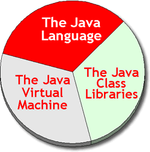
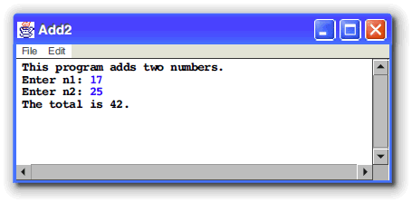
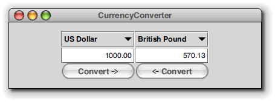

After looking at computer memory,
the CPU, and a little computing history, we
finally, (I hear some of you say), come to Java.
Java is a sometimes controversial topic in the computing world;
Sun Microsystems and Microsoft have exchanged lawsuits over Java, and
Java figured prominently in the government's Microsoft antitrust trial.
If you're like most people, you've probably asked
yourself, "Why?"

Let's start by taking a "high-level" look at Java. Part of the controversy surrounding Java occurs because different people mean different things when they talk about Java.
In this lesson we'll look at:
- what we mean when we talk about "the Java platform"
- why Java is important in the wider computing world
- why Computer Science students should learn Java
Let's start by answering the question, "What is Java?"
Just What IS Java?
Java is an often confused and misused term in the field of computing. Sun Microsystems, the developers of Java, hoping to alleviate some of this confusion, have provided a simple definition; according to Sun, Java is :
Certainly nothing controversial there! (I'm sure that all of you find Sun's explanation just as illuminating as I do :)!) Instead of walking through each of these "buzzwords", let's step back and take a look at what I call the three faces of Java.
The "Three Faces" of Java

A well-known Indian legend tells the story of seven blind men describing an elephant. The one who felt the trunk thought the elephant was like a snake, the one who felt the legs thought the elephant was like a tree, and so on.
Java is a little bit like that; you'll often hear people say things like:
- "Java is slow" or, (less often), "Java is as fast as C++"
- Java programs look "strange"
- Java is better for building Web applications than Microsoft .NET
- Microsoft .NET supports Java along with other programming languages
- Java is the cross-platform scripting language that works inside your Web browser
Each of these statements (except for the last) contains a kernel of truth; each
also suffers from confusion between the three parts of the Java
platform. In reality, Java is:

-
an object-oriented programming language. The Java language,
like C++ or SmallTalk, can be supported on different runtime systems, like the
Sun Virtual Machine, or even on Microsoft's .NET.
- an interpreter-based runtime system called the Java Virtual
Machine or JVM. There are several differnt kinds of
JVM's. Some use an interpreter, some use a Just In Time (JIT) compiler. All
of them, though, use a "virtual" machine language called bytecode.
- a set of universally distributed classes called the Java Class Libraries. The class libraries provide support for GUI programming, network and file I/O, etc.
The combination of all three of these are called a Java platform. The most commonly used Java Platform is supplied by Sun (called the JRE), but there are also versions supplied by Apple, Microsoft, IBM, HP, and so on.
What about JavaScript?
JavaScript is often confused with Java, but the two are really not related at all. JavaScript is a programming language designed by Netscape, used to manipulate Web documents and Web browsers. JavaScript was originally named LiveWire, but was renamed by Netscape when Java became popular.
JavaScript source code is downloaded to your Web browser, often embedded inside an HTML program, and the instructions are interpreted and executed by your Web browser. JavaScript and Java are two entirely different languages, used for entirely different purposes. JavaScript is often used to control your Web browser and the contents of individual Web pages while Java is a general-purpose programming language.
So, if Java isn't the same as JavaScript, then what is Java used for? What kind of programs are written in Java?
Types of Java Programs
There are four major types of Java programs:- applets
- applications
- server-side programs
- mobile applications
Applets
Java applets are graphical Java programs that are "hosted" inside a Web page, like Mark Wesley's GoldFish applet shown here. Here's how Java applets work:
- The compiled Java machine code (known as a .class file) for your program is stored on a Web server, much like an .gif or .jpg image file, or like a Flash animation file.
- The code is automatically downloaded to the viewer's machine when a user visits a Web page that contains a reference to the applet (called an applet tag).
- The user's Web brower starts running a Java Virtual Machine when it encounters a Java applet, and the JVM runs the applet inside the browser's JVM. This is similar to the way Flash/Shockwave animation, or other browser plug-ins, like QuickTime, are handled. The JVM browser plugin is installed when you install the Java JRE (Java Runtime Enviroment). If you can see this applet, you already have a JRE installed, but if you don't it only takes a few minutes.
- For safety sake, Java applets are prohibited from performing actions that might damage a user's machine if used maliciously. Applets cannot read and write files on the user's local machine, for instance, or contact other servers to send your credit-card information to China or Nigeria.
Sometimes, you'll hear applets referred to as "client-side" Java. That's because all three parts of the computing process: input, output, and processing, occur on your local machine, even though the executable class files are stored on the Web server. In this class, you'll learn to create both applets, and the second kind of Java program, called an application.
Applications
Java can also create applications, which are programs that are installed and run on the user's local machine, in the same way you would install and run a program written in Visual Basic or C++. There are two kinds of Java Java applications:
- Console-mode applications are the traditional "teletype-style"
programs similar to those you'd write in a Pascal or C++ class.

- GUI (Graphical User Interface) applications. These programs use windows,
buttons, checkboxes and graphics to create the kind of interactive programs
you're used to in the Windows & Mac worlds. Here's a Currency Converter
Java application, running on the Mac:

Java actually contains two different GUI libraries, the original AWT (Abstract Window Toolkit) which uses your operating system's native look-and-feel, and the JFC (Java Foundation Classes—AKA Swing), which provides a set of advanced components that can be made to look and feel the same on all platforms. Your textbook uses the JFC components, but I'll try to cover the AWT classes as well in our lectures. (The AWT is useful for writing applets, because earlier Java-enabled Web browsers don't have Swing installed.)
Other GUI libraries, like the Standard Widget Toolkit (SWT) from IBM, (used to create the Eclipse IDE) are available, but are not part of the standard, universal Java class libaries. During a portion of the class, we'll be using a library of graphical shapes developed by the Association of Computing Machinery. We'll also be using the ACM classes when we write our console-mode programs.
Server-Side Java
A third kind of Java program is called a server-side application. These programs use an additional set of Java classes, in addition to the classes contained in the Java 2 Standard Edition (J2SE). Collectively, these additional classes are called the Java 2 Enterprise Edition or J2EE. J2EE does not replace standard Java, which you'll learn in this class, but adds new features to it.
Server-side applications are not downloaded or installed on the user's computer. Instead, the Java program runs on an Application Server, (such as BEA WebLogic, IBM WebSphere, or Apache's Tomcat), and only the input or output is sent to the user's machine, as regular HTML.
Server-side applications are most often accessed through a Web browser, and are used for ecommerce and other interactive Web sites. The Web-CAT program grader that we'll use to grade the programming portion of your exams and homework is a server-side Java program. Here's an image I put together from a sampling of some research done by Marty Hall on different Web sites that are primarily based on server-side Java.
Mobile Java
You can also write Java programs that will run on Palm Pilots, cell phones, and other "low resource" devices. These programs use the same Java language, but an entirely different set of class libraries. The class libraries used for mobile devices are called the Java 2 Micro Edition or J2ME.
Other versions of the Java Platform, such as the one used in Google's Android phones, use the same Java language, but different class libraries.
Why is Java Important?
How is Java different from other programming languages you might use, like Visual Basic, Pascal, or C++? The biggest difference is the idea of cross-platform binary portability.
A portable language is one that is designed to run on different computer operating systems or different computer hardware. The C language is portable, for instance, because you can run the same program on both your Windows computer and your Macintosh, by taking your C-language source code and recompiling it with a different C compiler on each machine. JavaScript is also a portable language, because you can download the same program to a Mac user, a Windows user, or a Unix user, and the Web browser will interpret the source code, turning it into the correct machine code for the individual machine.
This is called source code portability, and it only works if:
- there is a compiler or interpreter available on each platform
- the program uses no platform-dependent facilities
C and C++ were designed to be portable. Languages like Visual Basic, AppleScript, or Intel assembly language, are non-portable languages.
WORE
Java programs are designed to offer more than source-code portablility; Sun's goal for the Java Platform is summed up in the "Pure Java" motto called WORE, or:
With WORE, you should be able to compile your Java program on a Mac and then run it, with no changes at all, on a Windows or Unix computer. This is possible because the JVM installed on each platform understands the same bytecode, and because every Java platform has the same classes available.
This might not seem like a big deal to you, but it means that businesses can develop their programs on inexpensive Windows and Mac computers, and then deploy them on very expensive servers and mainframes, all without making any changes. WORE means that software is no longer "locked into" the hardware platform it was developed on.
Problems with WORE
The major problem with Java is that WORE really isn't perfect; each implementation of the Java platform has subtle differences, and so developers ended up with:
There are several reasons for this:
- AWT GUI performance depends on native peers. In other words,
Buttonobjects on the Mac act differently fromButtonobjects on Windows or Unix. - Sun changes the classes in the platform but the different browers didn't keep up. New versions of Java are backwards compatible, (that is, you can run your old Java programs with a newer version of Java), but you can't run programs written using the latest features on older versions of the JVM.
- Sun and Microsoft exhibited an inability to "play well together", resulting in several lawsuits. Microsoft's version of Java was just a little different than the Sun version, so that programs developed with the MS version of Java didn't run everywhere the same, like they were supposed to. (Microsoft lost the lawsuit and no longer distributes its own version of Java.)
- Vendors of expensive Java application servers, like Oracle (BEA) and IBM (Websphere), add extra features to their app servers, which make it difficult to move a potentionally portable Java server-side application to a competitor's environment.
In addition to the WORE failings, Java speed is still definitely an issue. Java GUI apps use more memory and perform more slowly than equivalent C++ programs. For this reason, the most high-performance GUI apps (such as Photoshop or some video games) are still written in C or C++. For general use, server-side applications, and mobile apps, though, Java is certainly "fast enough".
Why CS Students Should Learn Java
If Java programs are less capable than C++ programs, and they run slower, then why not just learn C++ to start with, instead of messing with Java? There are several reasons:
- First, Java is a modern, object- oriented language. One of the major goals of CS education is to teach you to use abstraction. Abstraction is the ability to mentally "strip away" the non-essential details in a problem, and concentrate on the core elements to craft your solution, and Java lets you work at a higher level of abstraction than C or C++, or even C#. While there are still a lot of details you have to get exactly right, compared to C++ the amount of extraneous minutia has been considerably reduced.
- Java is used extensively in Computer Science classes at Universities across the country, not only for the introductory programming classes (like this one) but for your upper-division coursework as well. If you plan on transferring, your life will be a lot easier if you know Java well.
- Another nice bonus for CS students is that you can easily write graphical applications and, you can do your work on the Mac, Linux or on Windows: you choose. By contrast, writing graphical applications in C++ is much more complex, much too complex for an introductory programming class. Writing the "Hello World" application for Microsoft Windows in C++, for instance, takes a full page of code and involves pointers, structures static variables and callbacks.
- Finally, the tools that we'll use in this course are ideal for teaching programming. You'll learn how to use a professional Integrated Development Environment named Eclipse that is open source, cross-platform and completely free (which I'm sure you'll agree is important).
Which Version of Java?
There are several different versions of Java. Unfortunately, the version numbering scheme used for Java is a little strange. The first number you'll be concerned with is the major, or Java platform version. The platform version tells you what classes and methods are available when you write your Java programs and applets.
There are seven major versions of Java. The first two of these, Java 1.0 and Java 1.1 are only of historical interest:
- Java 1.0: This is the original version of Java introduced in 1995 and is widely supported in all Web browsers that run Java. The Java 1.0 class libraries had about 2,000 different methods in about 200 different classes.
- Java 1.1: The first major revision of Java in 1996. The major change was to a different "event model"; simply a different way of handling interaction with the user. In Web browsers, Java 1.1 is supported on Internet Explorer 4 and above as well as Netscape Navigator 4.06 and above for Unix and Windows. Java 1.1 is not supported on Navigator for the pre-OSX Mac; there you must use IE for Java 1.1 support. The Java 1.1 class libraries have a little more than 5,000 different methods in about 500 classes.
- Java 1.2: This was version of the platform was released in 2000 and is also known as Java 2. On your Web browser, Java 2 applets use the Sun Java Runtime Environment (JRE, also called the Java 2 plugin). This works the same way that Flash or other browser plugins work. Java 2 applets run on Netscape 6, IE (4 and above), Opera, and on Mozilla. You cannot run Java 2 applets on Netscape 4.
- Java 1.3 and Java 1.4: These were relatively modest changes to the basic "Java 2" platform. Some classes were added (XML libraries, for instance), and a few small changes were made to the language (most notably, the addition of the assert statement).
- Java 5 and Java 6: These are the most recent major versions of Java. The biggest change in Java 5 was the addition of generic collection classes as well as iterators, like the Scanner class for processing input. In this class, you can use either Java 5 or Java 6. You cannot use any of the earlier versions of Java.
SDK/JDK and JRE Versions
Here's where things start to get kind of weird. The software used to write (as opposed to run) Java programs was originally called the Java Development Kit, or JDK. To write software for the Java 1.0 platform, you used JDK 1.0. To write software for the Java 1.1 platform, you used JDK 1.1. There are also minor versions of each of the JDK versions. These versions are numbered with additional digits like this: 1.0.2, 1.1.2,...1.1.8. The minor JDK version updates were bug fixes; they didn't add any new features.
When the Java 1.2 was introduced, Sun changed the name of the development software from the JDK to the SDK, but kept the original JDK version numbering. The official name for the first Java 2 JDK was the Java 2 SDK, Standard Edition, version 1.2, or J2SE 1.2.
Since then, there have been four major updates to the Java platform, J2SE 1.3, J2SE 1.4, J2SE 1.5 and J2SE 1.6. Each of these revisions represents a major release of the Java platform. Just to further confuse things, with the release of J2SE 1.5 the naming convention was changed once again: the official name for the that release was changed to J2SE 5.0, and the name of the development software was changed back from SDK to JDK. If that wasn't enough, with Java 6, the "2" was removed and the release was named JAVASE 6.0.
JRE and JDK
Tradtionally, the JDK or Java Development Kit is the software from Sun Microsystems used to write Java programs, while the JRE or Java Runtime Environment is the software used to run Java programs.
For the class this semester, you do not need the JDK (although you can download it and install it if you like; I've supplied a video lecture on downloading and configuring the JDK for those who want to do that.) The reason you don't need the JDK this semester is because we will be using the Eclipse development environment the entire semester, and it contains its own compiler and other development tools.
You will need the latest JRE for your platform (Java 5 on the Mac and Java 6 for everyone else). To install the JRE, just point your Web browser to http://www.java.com, click the Download button and then just follow the instructions.
Coming Up Next...
In your on-campus class this week you learned about the Mechanics of Java programming using Eclipse. How to:
- Start Eclipse and switch workspaces
- Use the Navigator and Package Explorer views
- Create a Java source-code file, edit and run your program.
In the last online lecture this week, you'll learn a little about the basic structure of a Java program.